BIM is not the software layer. It is the decision layer.
BADR uses BIM, 4D and 5D to make coordination, quantities, buildability, logistics and decision timing visible before they become site risk.
Each BIM case is connected to an architectural project, not isolated as a software screenshot.
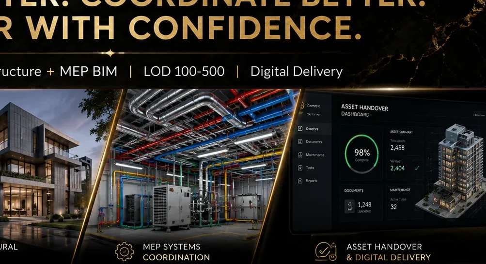
Andalus Courtyard Residences
BIM thinking turns a residential courtyard concept into coordinated information: model organisation, quantities, architectural components and delivery clarity.
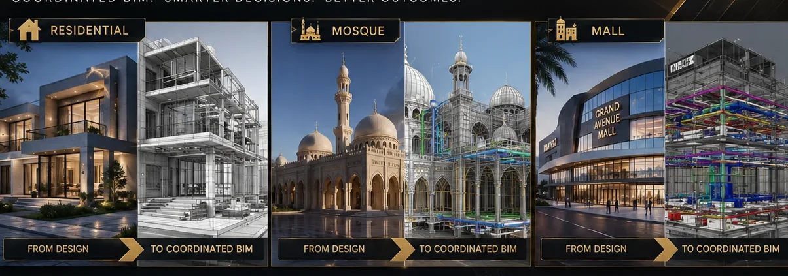
Al Noor Grand Mosque
Geometry, structure, light and spatial hierarchy require a model that can hold the architectural intent and coordination logic at the same time.
Souq Galleria Mall
Retail projects need clear federation: architecture, MEP, circulation, frontage, vertical movement and tenant logic visible before site decisions become expensive.
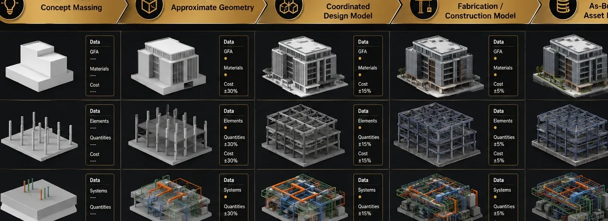
Desert Pearl Residences
A residential tower benefits from repeated logic, vertical coordination, podium complexity and quantity visibility across levels.
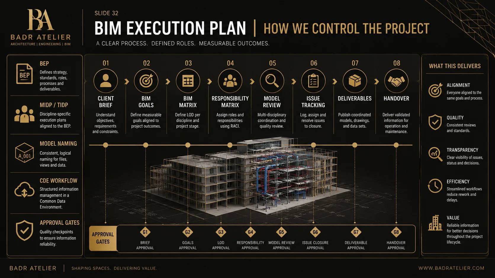
Wadi Court Mixed-Use
Mixed-use delivery requires more than modeling: phasing, logistics, podium interfaces, landscape and systems must be visible as one delivery story.
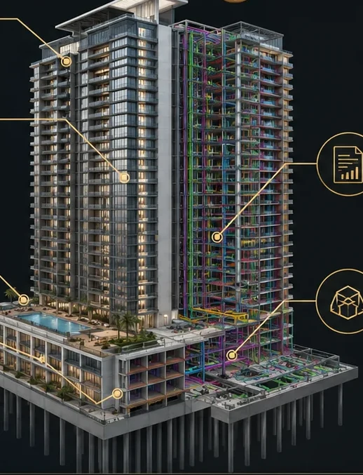
Falcon Arena Concept
Arena-scale projects demand spatial control, crowd movement clarity, system coordination and a digital model that supports high-risk decisions.
Coordination, modelling, quantities and delivery visibility — curated from the BIM Services Portfolio.
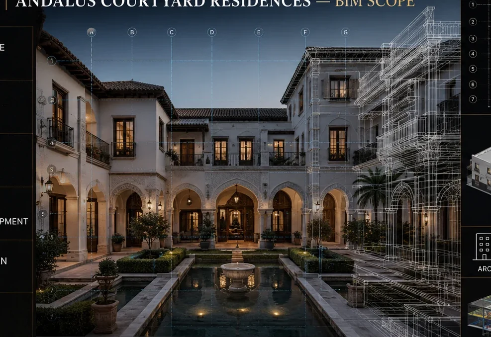
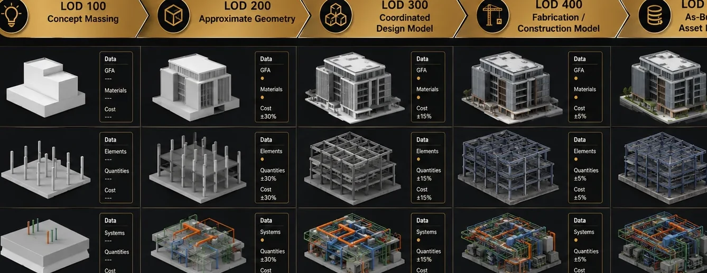
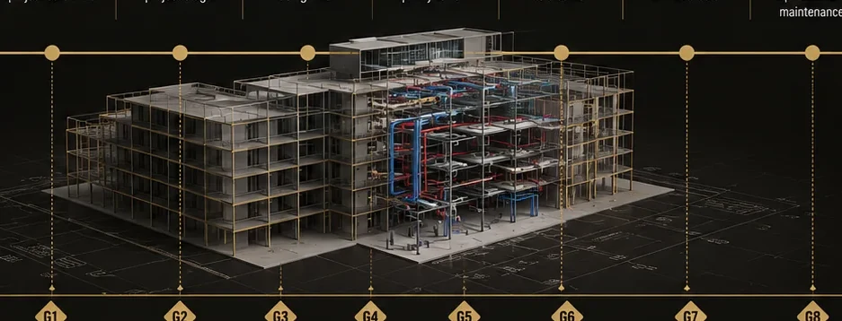

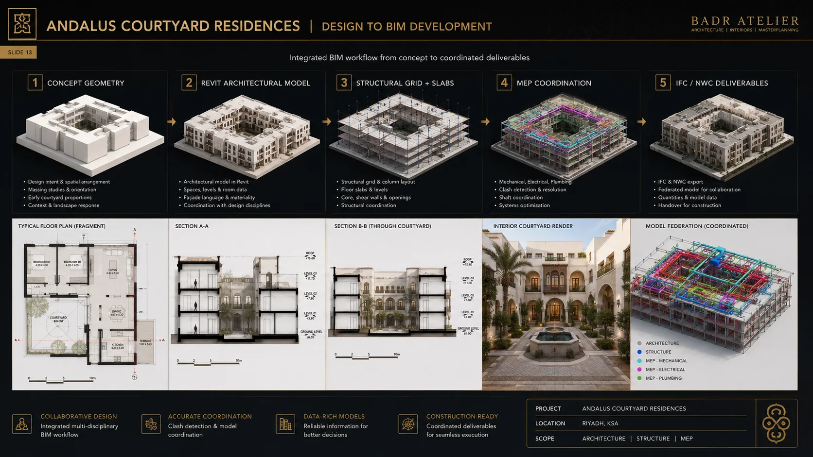
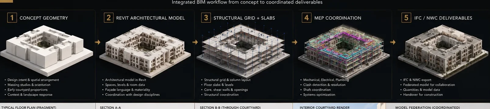
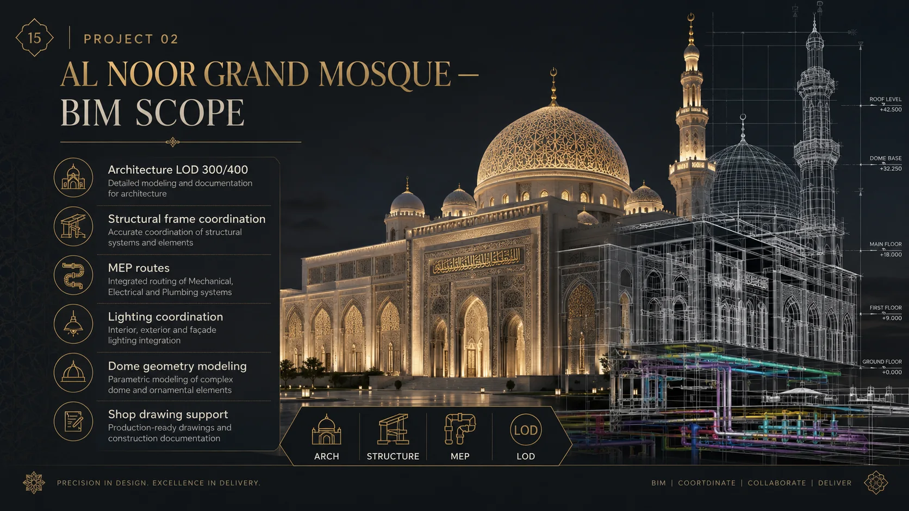
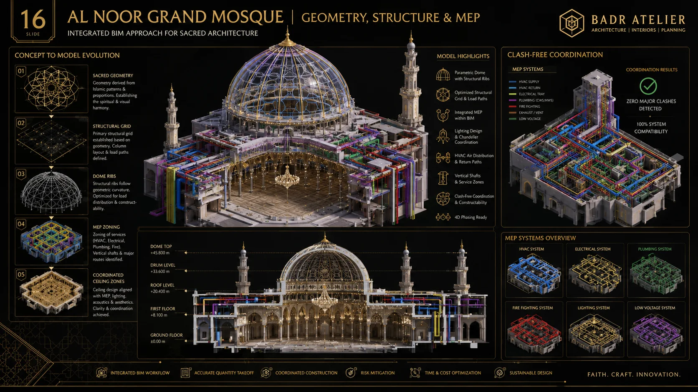
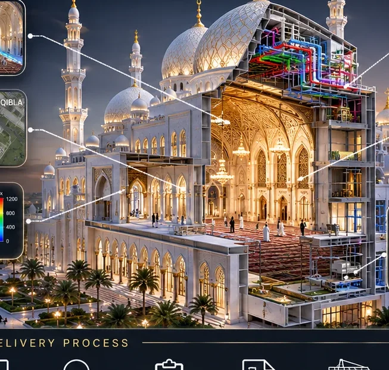
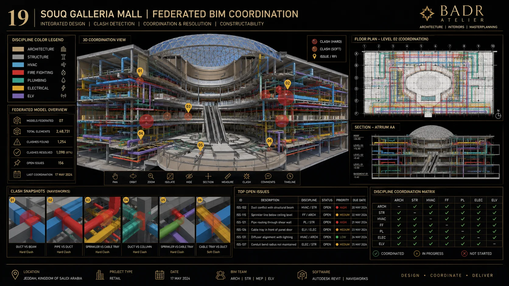
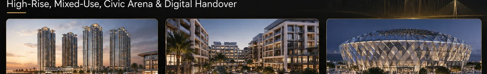
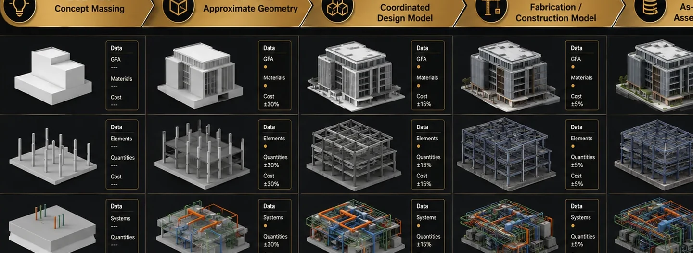